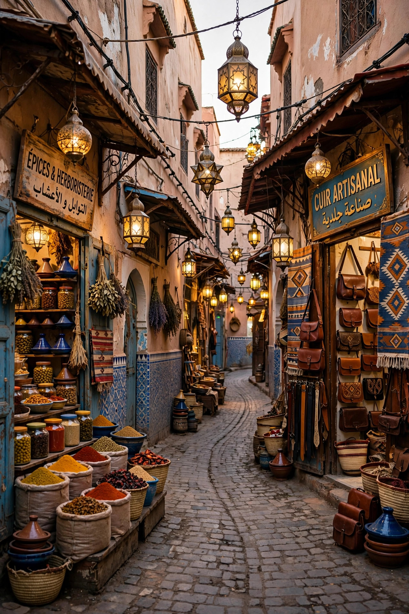

From Wikipedia, the free encyclopedia
| Medina | |
|---|---|
 | |
| Also called | Old town, casbah quarter |
| Region | North Africa and the Levant |
| Notable | Medinas of Fez, Tunis, Marrakesh, Aleppo |
A medina (from the Arabic مدينة madīnah, "city") is a distinct historic urban section found in many North African cities, and in cities such as Jerusalem, Damascus, Aleppo and Tripoli in the Levant. In modern usage, medina quarter in English refers to the old town — usually the pre-colonial, walled city core distinguished by its maze of narrow streets, dense courtyard housing, mosques, madrasas, markets (souks) and workshops.
Medinas were built to human and animal scale: streets are often too narrow for wheeled vehicles, with lanes branching into cul-de-sacs (derbs) serving clusters of inward-facing courtyard houses that prize privacy. The urban core is typically organised around a congregational mosque, with souks arranged by trade — metalworkers, dyers, tanners, spice sellers each in their own market area — and public facilities such as hammams (bathhouses), fountains and caravanserais (fondouks or khans) where merchants lodged and traded. Defensive walls with monumental gates (babs) enclosed the quarters; many medinas also contain a fortified citadel (kasbah).
Colonial administrations in the Maghreb typically built new European-style quarters (villes nouvelles) beside, rather than destroying, the medinas, leaving the old towns to poorer residents; this preserved their historic fabric even as buildings deteriorated. Several medinas are UNESCO World Heritage Sites — Fez el-Bali (1981), Tunis (1979), Marrakesh (1985) and Aleppo (1986) among them — and are subject to conservation programmes. Fez el-Bali, founded in the 9th century, is often cited as the world's largest car-free urban area and hosts the University of al-Qarawiyyin, founded in 859.